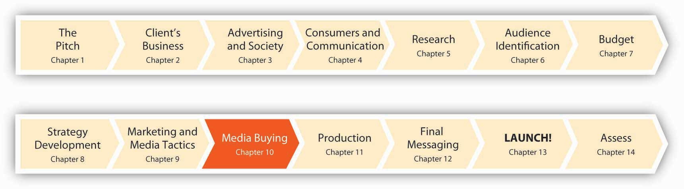
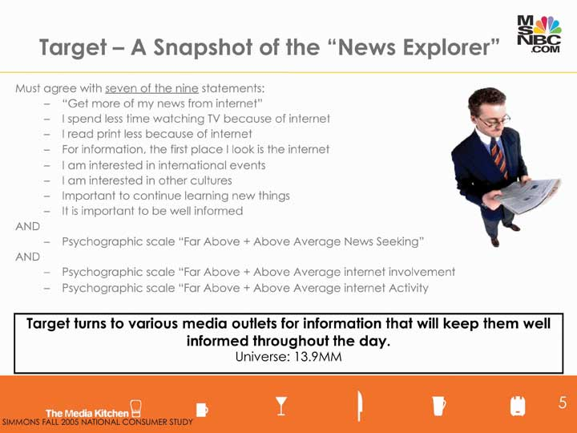

Figure 10.1 Four Months to Launch!
Advertisers like msnbc.com face tough choices. An ever-growing portfolio of media offers the promise of reaching different consumers in different contexts and at different times. The tools available to us range from an 8.5-by-11-inch ad tacked to your classroom wall by one of your fellow students who wants to sell his used textbooks (good thing we don’t need those anymore in our new “Flat World!”) to a high-tech mystery game where thousands of people text, IM, or Twitter one another with clues to help each other figure out the message.
SS+K and msnbc.com were ready to start pairing the objectives of the campaign with tactics they would use to achieve these, so they engaged a partner agency called The Media Kitchen to help. The Media Kitchen is the media arm of creative shop Kirshenbaum Bond and Partners, which is owned by the holding company MDC Partners (which also owns the innovative ad agency Crispin Porter + Bogusky). The basic philosophy at The Media Kitchen is to evaluate the research and information about the target audience—the news consumers that SS+K has dubbed News Explorers—and then decide which vehicles fit best. The first thing TMK had to do was to obtain demographic and media usage information about the News Explorers in order to understand where SS+K could find them. Once the agency understood more about which media these people relied upon, its planner would be able to coordinate the campaign’s messages and make media choices to ensure that the right people would see or hear these messages. After all, if an ad plays in the forest and nobody hears it, is it an ad?
Figure 10.2
The Media Kitchen used data from a survey like the ones we discussed in Chapter 6 "Segment, Target, and Position Your Audience: SS+K Identifies the Most Valuable News Consumer", conducted by Simmons Market Research Bureau, one of the leading authorities on consumer behavior. They used this information to develop a profile of its target consumers and to match that profile with the target’s media habits. These are the criteria The Media Kitchen used to describe the News Explorer segment in the Simmons database.
Choosing the right media mixThe media that will be used to get a campaign’s message to consumers, arrived at by understanding the primary advantages and disadvantages of each media format. means understanding the primary advantages and disadvantages of each media format, from magazines to IMs. Media planningThe process of selecting which media vehicle to use, when, and where. is the process of selecting which media vehicle to use, as well as when and where. Before we talk about how we mix and match media to meet our campaign objectives, let’s review the options and discuss some of the pros and cons of each.